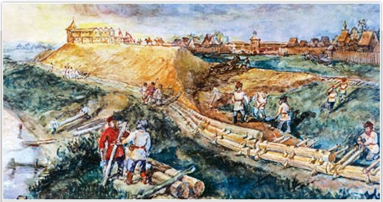
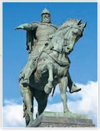
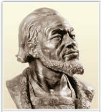
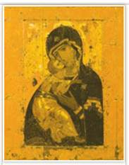
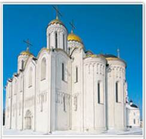
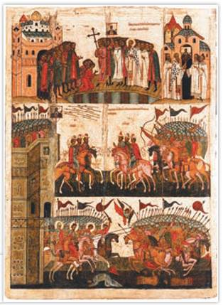
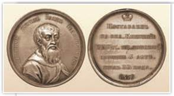
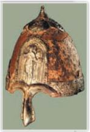

Строительство Московского Кремля в 1156 г. Реконструкция. Музей Москвы
На картине достоверно изображён способ укрепления земляных валов с помощью брёвен. Именно так строили крепостную стену на Боровицком холме по указу князя Юрия Долгорукого.
РОССИЯ
МИР
1. Особенности развития Северо-Восточной Руси. На северо-востоке Руси, в лесах между Окой и верхней Волгой с древности обитали племена финно-угров — мурома, меря, весь. Здесь же расселились вятичи и кривичи. В основном жили они мирно, занимались пушным и рыбным промыслами, по рекам и озёрам осваивали торговые пути. Под 862 г. в летописи впервые упоминается Ростов, под 1024 г. — Суздаль. В IX—X вв. северо-восточная территория Руси была далёкой окраиной — «где-то за лесом» по отношению к столичному Киеву, поэтому иногда её именовали Залесьем. Удалённость от южных границ и непроходимые леса спасали край от набегов степняков.
С конца XI в., во многом заботами Владимира Мономаха, владевшего волостью со стольным Ростовом, начался подъём Северо-Восточной Руси. Князь возводил новые города, устраивал переселенцев, бежавших от половецкой угрозы, селил пленников, захваченных в усобицах. Так в 1108 г. появился Владимир-на-Клязьме.
Постоянный приток населения и свободные земли способствовали быстрому развитию хозяйственной жизни на северо-востоке. Пашни здесь давали небогатый урожай, за исключением большого массива плодородных земель, называемых Суздальским опольем. Южане принесли в Залесье новые приёмы земледелия, отчего урожаи стали получать отменные. Излишки зерна суздальцы продавали соседям.
В XII — начале XIII в. местные бояре не имели крупных вотчин, землю они получали из рук князя и поэтому от него зависели. Вечевые и дружинные традиции постепенно угасали, а княжеская власть всё больше укреплялась. Название края менялось не один раз: Ростовская (до 1125 г.), Ростово-Суздальская (1125—1157), Владимиро-Суздальская земля (с 1157 г.).
2. Княжение Юрия Долгорукого. Дело Владимира Мономаха по обустройству Ростовской земли продолжил один из его младших сыновей Юрий Долгорукий (1125—1157). Стольным городом он сделал Суздаль. Но сам князь жил неподалёку. В селе Кидекше он возвёл свою резиденцию и белокаменный храм в память святых Бориса и Глеба. Здесь, при впадении реки Каменки в Нерль, шли торговые пути, поэтому удобно было собирать пошлины с купцов.

Памятник Юрию Долгорукому. Скульпторы С. Орлов, А. Антропов, Н. Штамм. 1954 г. Москва
Памятник является одним из символов столицы. Напротив монумента находится здание Правительства Москвы (мэрии).
С XV в. летописцы стали называть Юрия Долгоруким, возможно, из-за его активного вмешательства в дела соседей. Подражая отцу, Юрий Владимирович опекал переселенцев, основал немало городов: Городец (1152), Юрьев-Польский (1152), Кострому (1152), Дмитров (1154), Переяславль-Залесский (1152). В историю Юрий Долгорукий вошёл как основатель Москвы (1147).
Подробнее. По данным археологов, поселение на месте Москвы существовало уже в XI в. С союзом Юрия Долгорукого и новгород-северского князя Святослава связано первое упоминание о Москве в летописи в 1147 г. Князь Святослав успешно воевал в Смоленской земле. От Юрия к Святославу прискакал гонец с приглашением: «Приди ко мне, брате, в Москов». В честь удачного набега Юрий дал для гостей «обед силен», а сам получил в подарок охотничьего пардуса (гепарда).
При Юрии Долгоруком сложились основные направления суздальской внешней политики: отношения с Волжской Булгарией, Новгородом и борьба за Киев. Первым достижением Юрия стал успешный поход на волжских булгар. Попытки Юрия влиять на Новгород не принесли успеха. Новгородцы и суздальцы хотя и соперничали за территории, но были заинтересованы друг в друге. Суздаль продавал Новгороду зерно, а покупал изделия новгородских ремесленников и товары, привезённые из Западной Европы.
Киев по-прежнему считался общим владением всех Рюриковичей. К тому же это был крупный культурный и религиозный центр, где жил митрополит, поэтому Юрий, как и другие князья, отчаянно сражался за киевский престол. Столичным Киевом и титулом великого князя он владел не единожды (1149—1151, 1155—1157), но для киевлян так и остался чужим.
3. Княжение Андрея Боголюбского. В боевых походах на юге Юрию Долгорукому помогал его сын Андрей. Ему Юрий выделил Вышгород, находившийся рядом с Киевом. Но сын, нарушив волю отца, не остался в Южной Руси. По словам летописца, Андрей «восхотел идти на княжение в Суздаль и Ростов, говоря, что там спокойнее». После смерти Юрия Долгорукого Андрей стал полновластным правителем. Своей столицей в 1157 г. он сделал Владимир-на-Клязьме, где княжил ещё в детстве. Так он уменьшил влияние боярства прежних столиц — Суздаля и Ростова, где власть князя ограничивало вече. Рядом с Владимиром, в селе Боголюбово, князь построил свой дворец и церковь Богородицы и вошёл в историю как Андрей Боголюбский (1157—1174).
Подробнее. Летопись связывала перенос столицы Ростово-Суздальской земли во Владимир с чудом. Андрей вёз из Вышгорода на север, в свою землю, константинопольскую икону Богоматери. По преданию, она была написана ещё апостолом Лукой. Близ Владимира кони встали, и пришлось князю заночевать в поле. Во сне явилась ему Богородица, сказала, что любо ей это место, а для иконы надо заложить храм. На месте ночлега князь основал свою резиденцию Боголюбово и возвёл во Владимире белокаменный Успенский собор, поместив туда икону Богоматери. Здесь святыня получила нынешнее название — Владимирская и стала одной из самых чтимых чудотворных икон Русской православной церкви.
Андрей сразу заявил о себе как самовластец. Он изгнал за пределы Владимиро-Суздальской земли своих братьев, а дружину Юрия Долгорукого распустил. В боярах — советниках отца князь также не нуждался, ото всех строго требовал выполнения приказов. Более десятка старших и младших князей из других земель Андрей сделал зависимыми. Чтобы возвыситься над Киевом, он желал создать во Владимире свою церковную митрополию, но не получил одобрения на это константинопольского патриарха. Андрей украсил Владимир каменными Золотыми воротами с надвратной церковью, укрепил город земляным валом и новой бревенчатой стеной.

Андрей Боголюбский. Реконструкция М. Герасимова. Музей Москвы

Владимирская икона Божией Матери. Первая треть XII в.

Успенский собор. XII в. Владимир
Успенский собор во Владимире, возведённый по указу Андрея Боголюбского, был выше Софийского собора в Киеве. Подумайте, что хотел подчеркнуть этим князь Андрей.
ТОЧКА ЗРЕНИЯ
Из книги историка Н. Костомарова «Русская история в жизнеописаниях её главнейших деятелей»
Андрея не пленяли никакие надежды в Южной Руси. Андрей был столько же храбр, сколько и умён, столько же расчётлив в своих намерениях, сколько и решителен в исполнении. Он был слишком властолюбив, чтобы поладить с тогдашним складом условий в Южной Руси, где судьба князя постоянно зависела и от покушений других князей, и от своенравия дружин и городов.
Андрей Боголюбский много и успешно воевал. В 1169 г. его сын Мстислав во главе подручных отцу князей и половцев взял «на щит» (штурмом) Киев и разграбил его. Андрей не стал править в Киеве, киевским князем он сделал своего брата Глеба, а сам остался править во Владимире.
В 1170 г. войско Андрея и его союзников проиграло битву новгородцам, и те демонстративно стали продавать суздальских пленников за бесценок. Но Андрей не потерпел унижения и нашёл на них управу, запретив подвоз хлеба Новгороду, после чего Новгород признал его власть. В 1174 г. Андрей Боголюбский пал жертвой заговора собственных слуг. Его могила была обнаружена в Успенском соборе города Владимира. В 1935 г. учёные подтвердили подлинность останков Андрея по следам ранений, нанесённых ему при убийстве. Учёный М. Герасимов воссоздал облик князя.
Подробнее. По преданию, поражение суздальцев в битве с новгородцами в 1170 г. связано с иконой «Богоматерь Знамение». Перед битвой новгородцы, совершив молебен в храме Святой Софии, установили на крепостной стене чудотворную икону. Стрелы полков князя Андрея Боголюбского поразили образ Богоматери. Тогда Богоматерь отвернулась от суздальцев, их войско накрыла тьма.

Чудо от иконы «Богоматерь Знамение». Новгородский государственный объединённый музей-заповедник
Историки отмечают достоверность деталей иконы: это вид новгородских храмов, Великого моста через Волхов, крепостной стены, одежды жителей. Первоначально фон иконы мастер покрыл мерцающим золотом, которое местами сохранилось до наших дней.
4. Владимиро-Суздальская земля в конце XII — первой трети XIII в. После гибели Андрея Боголюбского и последовавшей затем междоусобицы великим князем владимирским стал младший сын Юрия Долгорукого Всёволод Большое Гнездо (1176—1212). Всеволод получил прекрасное образование в Византии, куда был в детстве изгнан Андреем Боголюбским.
Всеволод покорил ростовских князей и бояр, подчинил опасного противника — соседнюю Рязанскую землю, рязанского князя Глеба держал в неволе до смерти. Твёрдой рукой Всеволод усмирил вольных новгородских бояр, и те принимали к себе князьями его сыновей. Он успешно воевал с Волжской Булгарией, не решились вступить с ним в сражение половцы. Недаром могущество владимиро-суздальского князя воспел автор «Слова о полку Игореве»: «Великий князь Всеволод! Не помыслишь ли ты прилететь издалека, отцовский золотой престол поберечь? Ты ведь можешь Волгу вёслами расплескать, а Дон шлемами вычерпать».
За время правления Всеволода Юрьевича Владимиро-Суздальская земля не страдала от внутренних усобиц. При нём во Владимире расширили Успенский собор, русские мастера возвели Дмитриевский собор.
Любопытные детали. Летописцы дали Всеволоду прозвище Большое Гнездо, видимо, не только за наличие у него восьмерых сыновей. У Юрия Долгорукого было, например, 11 сыновей. И через сто лет потомки Всеволода сидели князьями во многих городах Владимиро-Суздальской земли. Другие ветви северо-восточных Мономашичей угасли. Всеволод оказался прародителем и московских князей, и государей всея Руси, правивших до начала XVII в.

Великий князь Всеволод Юрьевич. Памятная медаль. XVIII в.
На памятной медали Всеволод изображён в богатой одежде и с меховой шалью. На оборотной стороне медали выбита надпись: «Призван на великое княжение Владимирское 1177 года, владел 35 лет, жил 58 лет».
Соответствует ли дата начала княжения Всеволода Юрьевича, указанная на медали, данным, принятым позднее в исторической науке?

Шлем князя Ярослава Всеволодовича. Вторая половина XII — первая половина XIII в. Оружейная палата Московского Кремля
В августе 1808 г. крестьянки из села Лыкова Владимирской губернии случайно нашли воинские доспехи. В кустарнике из земли выступал шлем, а под ним виднелась сильно проржавевшая кольчуга. Доспехи обнаружились в 20 км от места Липицкой битвы. Находку передали учёным в Санкт-Петербург. По надписи на шлеме историки ещё в XIX в. установили, что тяжёлые доспехи бросил князь Ярослав Всеволодович, потерпевший поражение в Липицкой битве. В 2021 г. завершилась научная реставрация уникального экспоната Оружейной палаты.
Подтвердилась догадка, что шлем был изготовлен из одного куска железной основы. Учёные предполагают, что шлем передавался в роду князей из поколения в поколение.
Незадолго до смерти Всеволод разделил свои владения между сыновьями почти на равные доли. Но старший сын Константин пожелал, чтобы его доля была увеличена. Узнав об этом, Всеволод пришёл в негодование и передал старшинство сыну Юрию. Ему же он завещал и стольный Владимир. После кончины Всеволода между его детьми началась усобица. Константин с князем Мстиславом Удатным и новгородцами воевал против остальных Всеволодовичей. В битве на Липицком поле (1216) небольшое войско Мстислава и Константина разбило многочисленные полки своих братьев.
ПОДВЕДЁМ ИТОГИ
Во второй половине XII в. благодаря активной политике князей Северо-Восточной Руси, которые сосредоточили в своих руках неограниченную власть, Владимиро-Суздальская земля успешно развивалась.
Вопросы и задания
Работаем с хронологией
Расположите в хронологической последовательности события:
Работаем с источником
Прочитайте фрагмент из книги историка Ю. Лимонова «Владимиро-Суздальская Русь: Очерки социально-политической истории» и ответьте на вопросы.
Как государственный деятель Юрий [Долгорукий] значительно выделялся среди князей своего времени. Он был хорошим администратором, понимающим, например, роль городов в общей системе колонизации. Достаточно вспомнить закладку «новых» и укрепление «старых» городов в Ростово-Суздальской земле. В области внутренней политики Юрий играл выдающуюся роль на протяжении многих лет. Он превосходно разбирался в междукняжеских отношениях, отдавал должное политической роли духовенства, с которым поддерживал тесные связи. Византийские высшие иерархи находили в его лице самого верного союзника и защитника. Юрий был хорошим дипломатом. У него сложились превосходные отношения с рядом европейских государств, с половецкими ханами и с императорским византийским домом Комнинов.
Работаем с понятиями
Что такое ополье? Какую роль оно сыграло в хозяйственном развитии Суздальской земли?
ДОПОЛНИТЕЛЬНЫЕ МАТЕРИАЛЫ
«УЧИТЕЛЮ И УЧЕНИКУ».
Материалы к параграфу на портале «История.РФ».